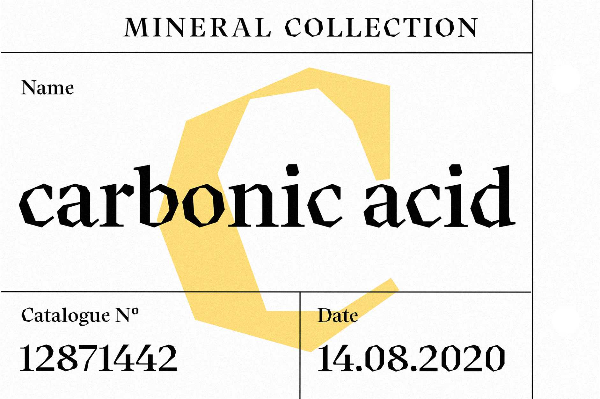
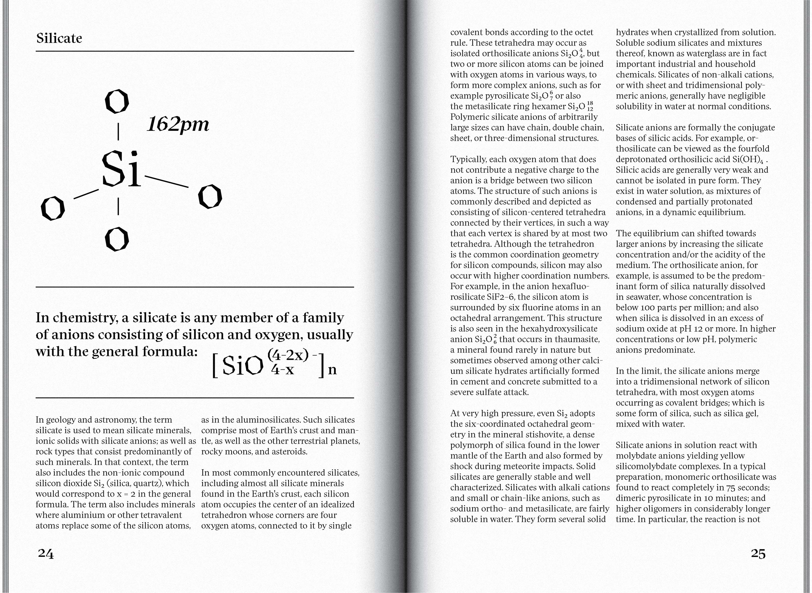
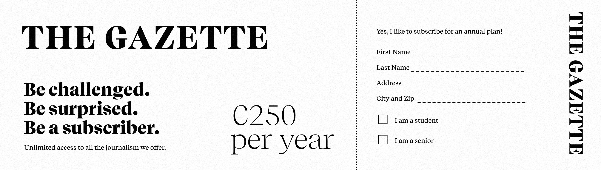
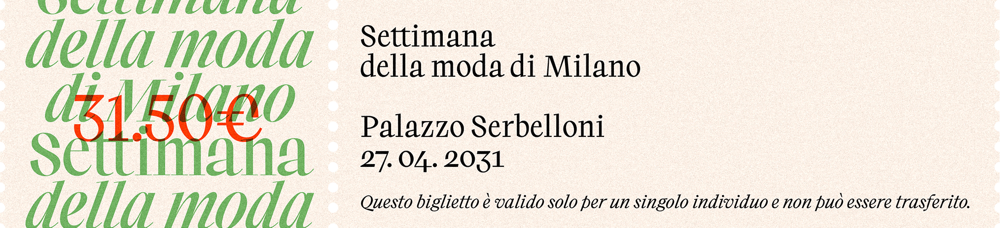

Luzi Type Foundry
Founded in 2013 by type designer Luzi Gantenbein, Luzi Type has emerged as one of Switzerlands
most innovative type foundries. Based in Bern, they represent a combination of
Swiss precision and global design influences, shaped by Gantenbeins experiences in London,
Santiago de Chile, and Zurich.
The Designer Behind the Letters
Gantenbeins journey began in the Swiss Alps, where the regions strong design heritage
would later influence his typographic approach. He has a degree in Visual Communication from
Bern University of the Arts. The Swiss influence is evident in the foundrys work, especially
in their commitment to precision, functionality, and timeless design principles.
Design Philosophy and Approach
What sets Luzi Type apart is their dedication to Clearness and Reduction,
a modernist approach that prioritizes clarity and simplicity without sacrificing character.
This philosophy manifests in typefaces that balance functionality with subtle, thoughtful
details that reveal themselves through use.
Educational Transparency
One of the most valuable aspects of Luzi Type for designers is their
transparency in their creative process. The foundry provides extensive design notes for
their typefaces, describing insights into their decision-making, iterations, and
technical considerations. These detailed documentations are great learning resources.
Contemporary Applications
Luzi Types influence is global, with their typefaces appearing in projects
ranging from editorial design to brand identity. Their client portfolio includes
INTRUSO Magazine, Lululemon, and Küng Holzbau, demonstrating the
versatility of their designs across different contexts and cultures.
Innovation in Type Design
One of their interersting creations is the Faro typeface. Faro features two distinct
moods: Lucky and Sad, which are differentiated by small variations in the letterforms.
This emotional expression through typography pushes how fonts can express feeling while
maintaining usability.
◀
▶
If you want to explore contemporary type design that honors historical
principles while still being innovative, Luzi Type is a great model. Their work
demonstrates how traditional design can be reinterpreted for a range of modern contexts and still
maintain quality and versatility.



Blending the delicate artistry of calligraphy with the raw and rustic essence of woodcut illustrations,
Koper takes inspiration from the captivating Art Nouveau designs crafted by Czech designer
Vojtěch Preissig. This typeface is meticulously shaped using precise straight lines, contributing to its
distinct visual appeal.
The family package includes two variable fonts: upright and italic, offering a wide range of possibilities
from Regular to Display.
Writing and reading involve diverse dimensions and varying tools. Spezia is a sans-serif typeface
designed to meet contemporary demands. With a harmonious visual balance and modern essence, Spezia
demonstrates its quality. Rooted in the neo-grotesque genre, it possesses a distinctive voice and
a simple monoline structure.
Consistent character-widths further enhance its simplicity. The
extensive range of weights and widths, spanning from Compressed to Extended, empowers users with
flexibility. With 128 font weights available, users can fully explore and fine-tune in detail their
typographic compositions.
Together with Spezia Serif, this typeface forms a unique and comprehensive
typographic system. Find more information about the design process of Spezia at our notes. Spezia
comprises nine subfamilies: Compressed, Extra Condensed, Condensed, Narrow, Normal, Wide, Extended,
SemiMono, and Mono. The typeface is available as individual weights and as a variable font.
Characterised by strong shapes and contrasting elements, Beirut is built
upon an innovative calligraphic principle. This font consists of two designs: the display version,
suitable for expressive titles, and the text version, optimised for easy reading at smaller sizes.
Beirut’s unique style stands out both in print and on screens.


This innovative
calligraphy reimagines traditional letterforms by integrating extra spacing within the
counterspaces of letters like a, f, and s, resulting in a unique and distinctive aesthetic.
Reflecting the spirit of Dutch antique fonts such as Plantin and Times,
the Recife typeface
is carefully crafted to meet the editorial needs of today.


This elegant serif typeface is based in exploration using a broad-nib pen.
It lays the foundational character of the typeface, giving shapes distinct warmth and
sophistication.
Albaro comes in two versions: Display and Text, each designed to cater to
specific typographical needs while maintaining the essence of its calligraphic roots.
Pushes the possibilities within the sans-serif genre, based on calligraphy,
but maintaining a geometric style and sleek look..